goodalexander
goodalexanderIntel, Sandisk, AWS, Binance. Shake it up. Add some Geopolitics. Why not?
Intel which is now down 29% this morning changed the story from "2027 is funded by operations" to that it's probably funded by debt and equity issuance that along with operational issues.

There are a number of things going on - in both stocks, crypto etc. I want to explain them and then get into my positions
TLDR: Intel which is now down 29% this morning changed the story from "2027 is funded by operations" to that it's probably funded by debt and equity issuance that along with operational issues. The memory sector is forcing ppl into multi year contracts at extreme prices and low capex budgets relative to demand are making the matter worse. There is already fairly strong evidence of demand destruction on consumer which is now tiny relative to enterprise. Optically Intel imploding is negative for Trump into midterms as he was pointing to it as evidence of his investment savvy (the US govt has a ~$30B+ stake in Intel which Trump likes to point to).
I continue to be bearish equities (S&P 500). I am still long XMR. As a short term trade, I think Silver (-5% today) could potentially reverse as "an accelerating threat environment in crypto" drives a bid back into precious metal beta (I previously noted I was short gold, I covered that as well). With EURCHF dropping, oil going up along with the dollar - the market's increasingly pricing geopolitical escalation (something we also see in odd markets post mid terms) - so macro de-risking and a dollar bid is likely accounting for the decline in precious metals rather than something structural (like nuclear fusion or space mining etc)
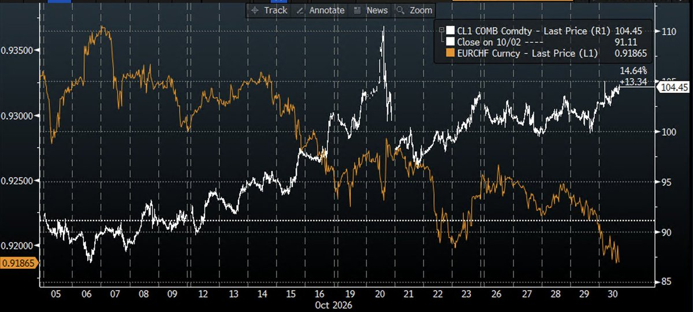
However -- AWS guidance and commentary was extremely impressive with 17x token growth, and Fortune 500s ramping spend 7x year on year - vastly outgrowing AWS itself. Given that the market is concerned about an inference deceleration at Anthropic - it seems reasonable that these fears are somewhat blown out of proportion as AWS is a better tracker for enterprise than Ramp and Fable 5.5 isn't out yet. Therefore I would much rather be short the S&P 500 into what seems to be a likely geopolitical event than chasing the Nasdaq lower on what appear to be Intel centric execution issues, a SOXL driven unwind and what looks like a Korean margin call more than Sandisk specific fundamental problems. If Fable doesn't come out in Q4, it's fair to say that would be really bad (but the plan is probably to drop it after ANT lists to pump the stock)
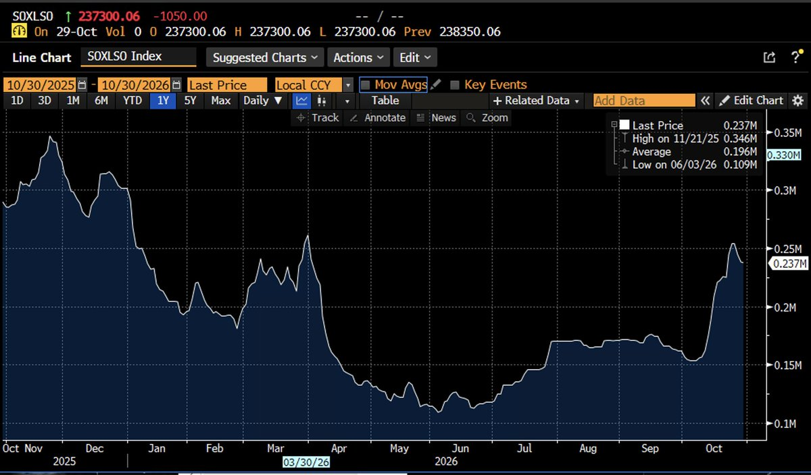
Regarding Binance - I think having the largest hack ever weeks after the launch of an abliterated AI model and every Lab running around pointing at infrastructure vulnerabilities just isn't positive. I think any headlines about how it was a non state actor with an abliterated AI model would cause a second bout of FUD and is worth monitoring.
So incremental position: long silver short S&P 500 futures
Q1: Why did Intel Chunk earnings?
Intel is currently down 25%+ pre market. So it's the most important thing to cover. It all started with Sam Altman drinking with the Collison Brothers and saying the "invisible hand of capitalism" has failed due to Memory prices (lol).
It appears the invisible hand is strangling Intel - specifically the Client computing business which is 1/2 of revenues and is now ex growth. Essentially, revenue missed because memory prices crushed the computing segment and the bar was high bc last 2qs of double digit sales beats. Trailing data center growth was 80% (fastest growth in 15 years) - but operational issues (packaging material shortage, factory capacity and accident at Israeli factory) are capping server shipments until 1H 2027. And finally the Q4 guide was a sht show -- you can see on model below that you'll have a major deceleration.
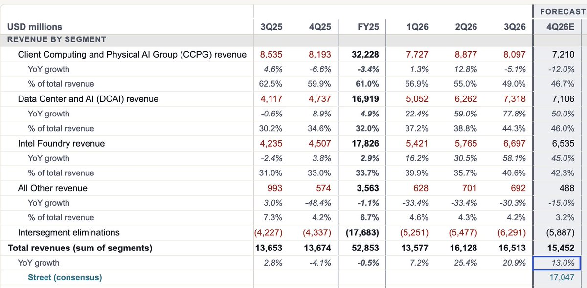
It wasn't just growth. There was an expectation of operating leverage for '27 months ago that has been removed and fully reversed. Intel is not able to make enough server chips. Here you can see the brutality of the cash flow revision.
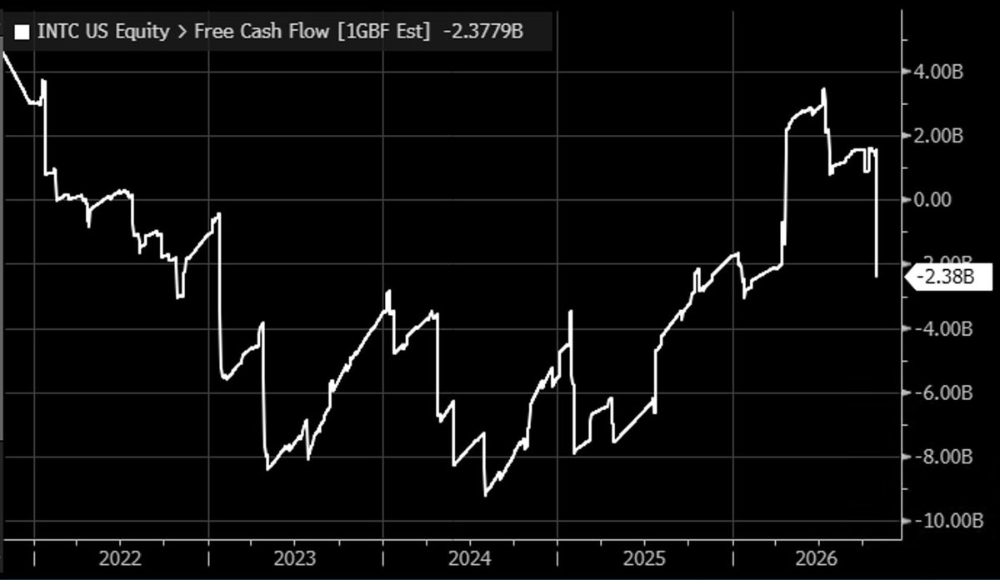
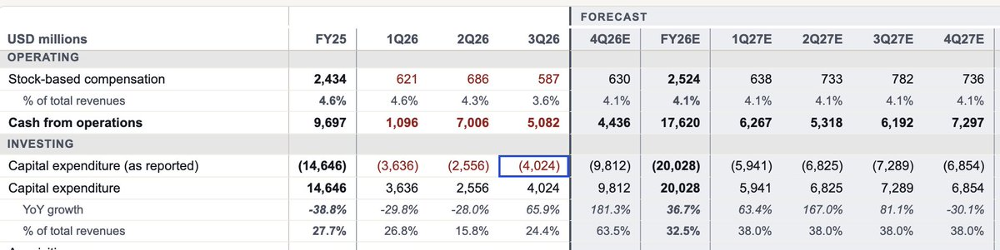
Key quotes from the call:
- "I also want to acknowledge headwinds limiting our progress to meet this extremely high AI-driven demand
- "In recent weeks, our customers began signaling a PC slowdown based on the memory prices and availability. Year-to-date system endpoint prices have increased significantly, placing additional pressure on already limited IT budgets. The pace of this PC correction has accelerated over the last 2 months, as our OEM partners are aggressively managing inventory to match the softer sell-through. We expect the current environment to persist until memory availability and prices begin to normalize"
- "I have always emphasized that rebuilding Intel is going to be a multiyear journey"
- "But make no mistake, we are not optimistic about next year in terms of memory. We think that it is going to impact the TAM. We think TAM will be down 10% on a unit basis next year. And then we'll have to see in '28 whether things improve. But our expectation is that it does not improve in '27."
- "CCPG revenue was $8.1 billion, down 9% sequentially and below our expectations"
- "Moving to CapEx, our 2026 gross capital expenditures remains on track to be $20 billion, and we expect 2027 gross capital spending to be up strongly."
- "I think next year is an investment year for us as we look at the year. Probably not a dynamic where we're going to have positive free cash flow next year."
- Bernstein: "I do, yes. I guess I wanted to ask about PC. So I mean, Q3 was probably the worst Q3 I've seen for PCs in at least 20 years, maybe more, sequentially."
Implications: we have a consistent picture of companies doing massive forward capex that will be unfunded into a decelerating inference market. The market consensus a month ago was that this was a FUNDED activity but now it looks increasingly to require large scale debt and equity issuance. The market has started rewarding *cuts* to investment as it's getting scared of ROI.
You can see that Amazon is aggressively ramping capex too and also likely is FCF negative next year
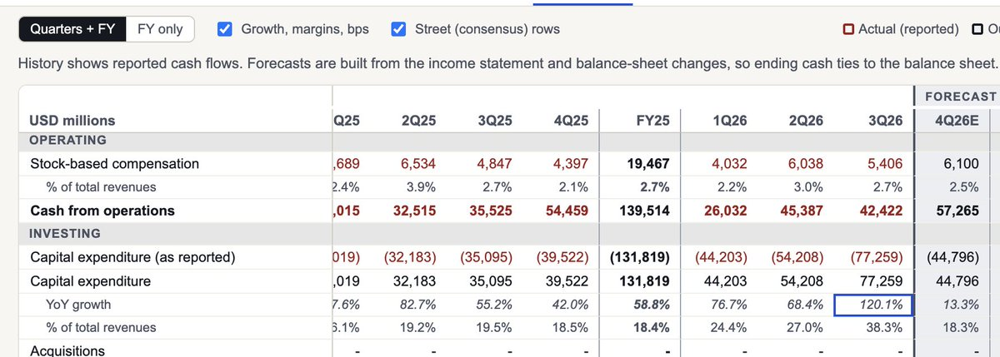
briefly on Amazon/ AWS as that's fairly important
- AWS was + 39.3% - the fastest in nearly 5 years. and Backlog is $578bn up from $496b last quarter, growing triple digits
- "We're installing an AI accelerator every 14 seconds, and almost as fast sa we install capacity. Enterprises are still very early in using inference at scale, and et inference already accounts for well over half of AWS AI revenue and growing.... the big chunks of capacity that people take, those big chunks are reserved well in advance. We have very good visibility into '27, and '28 and some of '29 too"
- Fortune 500s are spending about 7x more on Bedrock than a year ago and token volume is up 17x
- Chips revenue is growing at triple digit rates
- We believe that AWS can grow north of 40% in each of 2027 and 2028 and be a trillion dollar revenue business in the next 5-10 years
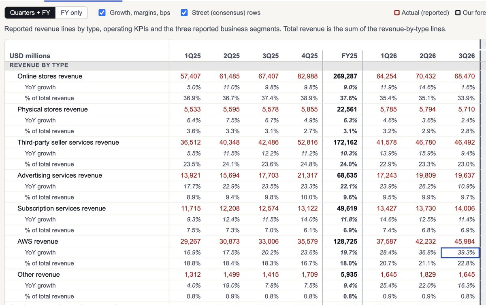
Q2: Why is Sandisk down?
What is interesting re: Intel is that they were complaining about memory prices but Sandisk (memory seller) is also down 9% pre market showing earnings disappointment. This is having the effect of dropping Korea another 5% pre market
This is somewhat surprising given that the company is moving customers to long term contract and showing supply discipline. Revenue beat consensus by 26% 2 quarters ago. 3.8% last quarter and 3.1% this quarter. Signaling that the market is increasingly used to memory outperformance so it's not a new story. And there's a bit of a growth decel from 23% QoQ to 12% with the CFO saying to be "conservative" on Q3 citing seasonality (not something you do if you're in a structural megatrend)
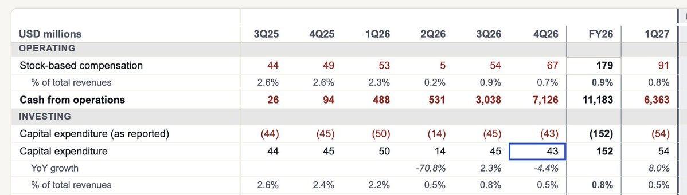
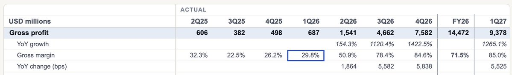
There is strong evidence of consumer demand destruction but it's tiny compared to datacenter
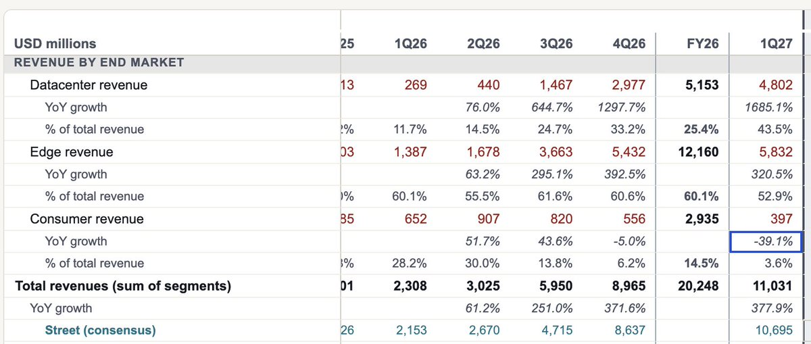
Key quotes:
- NBMs (new business model) are Sandisk locking in customers to multi year supply agreements. I think in my prepared remarks, I said that we expect the bits to continue to grow. We had shared with you that about 50% of our bits are under NBM for '27 and about 2/3 for '28. And we expect that number to continue to go a little bit higher from the 2/3.
- "Our NBM pipeline exceeds supply throughout the end of the decade"
- Supply - are you increasing it. "No, I mean we're committed to the bit growth we talked about. Mid to high teens"
- "We're going to return 100% of cash flow to shareholders" (Q1 buybacks were $5b)
- Pressed on INTC imploding (non answer). What we've said in the past is we do have NBMs in the data center business. It's data center-centric, but we also have customers on the edge. And we've offered this construct to any customer that wants it and start a process where it makes sense. So we're not trying to restrict it from any customer. We're open for business.
- Re High Bandwidth flash (new AI memory type). "we are on track to deliver samples of our first HBF based products next calendar year but it is not included in our financial model"
I think the market is telling us that the labs now view memory companies as their enemy and are going to turn the full power of their compute on advancing new memory types, and cutting reliance on the memory cartel. Notable that Sandisk is trading at 5x earnings with triple digit growth and 80%+ gross margins while the Nasdaq is at 25.5x forward earnings
Q3: What is up with the binance hack?
Last night Binance was compromised. Total losses are about $6.3 billion. Binance has reported $3 billion frozen but that does not mean funds are returned. CZ, his ex Wife are interacting with Elon saying not to compare it to FTX. Which isn't what you really want optically
What happened?
Multiple employees compromised. An employee laptop provided an original foothold to access a back end service container that allowed withdrawals. There were likely multiple other entry points as one engineer's permissions alone could not have executed the theft
The attacker obtained wallet level signing authority. This does not mean the hacker got private keys. but they then used that authority to install draining permissions. EIP 7702 lets a wallet sign an authorization delegating its execution to code. The attacker used that to authorize 167k ETH and $823 million USDC. But because there were many other chains effected EIP 7702 cannot account for all the money lost
It is very hard to say that this is a positive event for crypto multiples given that many people were hiding funds on CEX-es due to accelerating defi hacks. However - given that the surface area of the breach was likely employees -- the story for CEXes of employees being an attack area seems on the balance negative. I cannot imagine that institutions feel better about trading crypto on Binance after seeing this and multi billion dollar losses, while funded could be an ongoing risk.
The risk I think is more salient is that it comes out that the attacker was not a professional / DPRK asset and was instead a 'guy using abliterated AI model"
There is some evidence of strange amateur behavior given the scale of the hack - like the hacker didn't really think through stablecoin freezes.
There is some evidence the attacker wasn't sophisticated. The primary pieces of evidence here
They seemingly fat fingered $204 million to blacklisted wallets. Tether blacklisted the collector at 21:01:35 UTC. It subsequently received 3.92 million USDT at 21:04:23, then 200.40 million USDT at 21:44:11—over 42 minutes after the freeze. https://etherscan.io/tx/0x7baba482077843514d9c72bac0110ba0916b0814288a72917e2c3bb27a9d8659),
later 200.4M transfer https://etherscan.io/tx/0x55ba4dabc41b468e580751373ad31acdee6f5ba398682df2c93e5a8340870556).
$71+ m of slippage. Bitquery put out investigation https://www.bitquery.io/investigations/binance-hack-who-profited
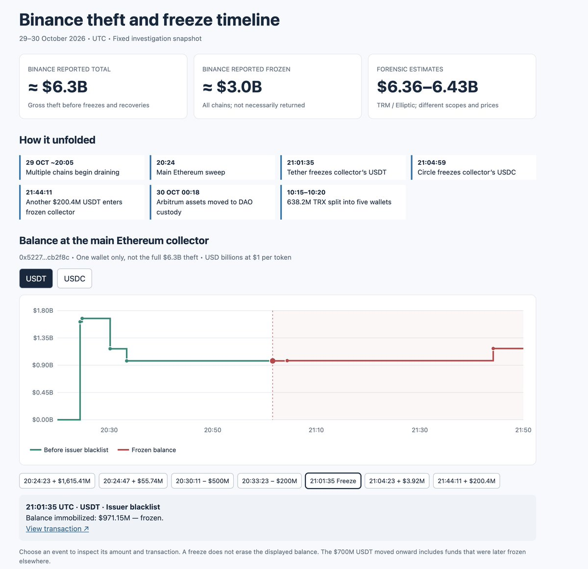
Somewhat surprising to me given the accelerating hack environment that Silver is down more than BNB where you might expect that crypto being insecure in an accelerated hack threat environment
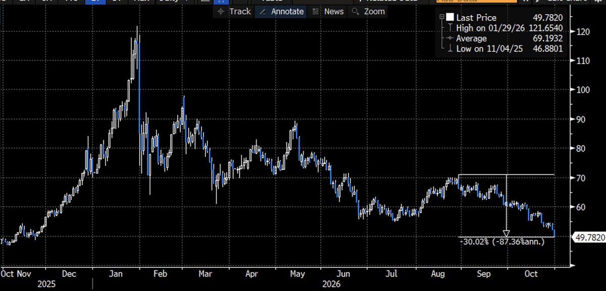
I do not think the market is particularly surprised about crypto hacking at this point but the scale of this hack is so giant that it's not great from a sentiment perspective. I still like the store of value coins (BTC, XMR, ZEC) more than economically exposed assets like exchanges and won't change the entire asset class thesis.
Q4: Sigh. Geopol what is going on there
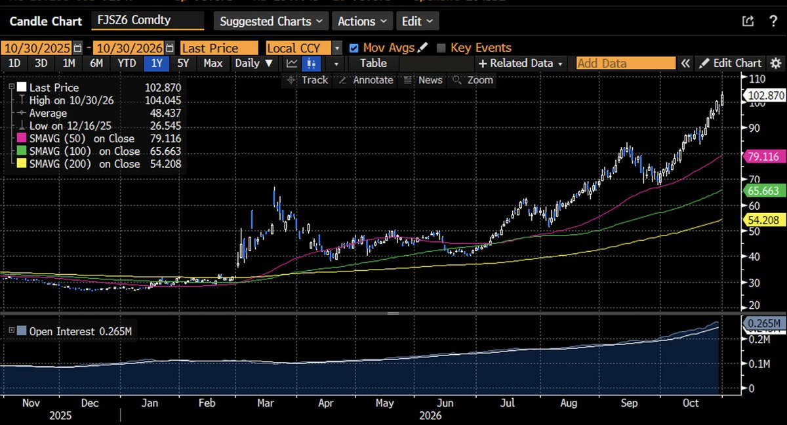
Basically on Thursday, a top military official Brad Cooper met with Trump, Hegseth, and Joint Chiefs Caine. Trump told the Gulf Sates to be prepared for a short burst of military actions after midterms per the WSJ. "We may do a little Epic Fury" Trump said at a rally last week. Cooper rarely briefs Trump in person so people reading into it are sending European gas futures to the highs. Meanwhille Iran has promised to strike a braod array of US and Gulf targets in response to any US strike
Qatar sent a mediator to Iran today to try and take the situation down a notch. The UK Navy said that a tanker in the strait was approached by a smallboat that put explosives on its hull on Thursday
Meanwhile Russian Deputy prime minister Novak said that Ukraine has started hitting 'three refineries and a gas chemical plant'. This ends a ceasefire on refinery attacks Trump had said to stop since October 15. The WSJ reported on Thursday that the pause in strikes could last into November
Conclusion
The overall picture of the market is 'it's hard to say inference is over given AWS'. It's fair to say memory is causing major demand destruction and problems and that the stocks are trading very poorly considering they're transitioning into long term customer contracts and keeping supply discipline. Intel is having major execution issues.
Consumers are still spending at a crazy clip, and it's hard to see that lasting into a prolonged War/ energy crisis - which, at least in equities is quite contrarian whereas it's largely priced in to macro assets. Essentially the way to think about it is that consumers have no idea what's going on in geopolitics and are not adjusting their behavior at all. I view that as a likely trailing indicator rather than a good thing.
It's hard to add to crypto given the possibility of another shoe dropping on the hack. I'm not shorting it either. I think silver is a good entry relative to stocks
More commentary
All commentary
One Last Midnight Opting Out of a Raw Deal: Long Coins Short Stocks
Cryptocurrency is running higher. Stocks are stalling. I think it's time for the big run in coins vs equities and the crypto market now has the infra…

Whiplash. DeepSeek, Inference is Over. SpaceX $1T Guide (We're Back)
Simply - near term after SpaceX and SMCI we see a sigh of relief on GPU economics and then are left with the Fable 5.5 launch to answer the question…

Is CoreWeave Going to Die
No. Coreweave I do not think is going to die. I think Anthropic roadshow will do better than expects due to Fable 5.5 lifting sentiment on Lab…